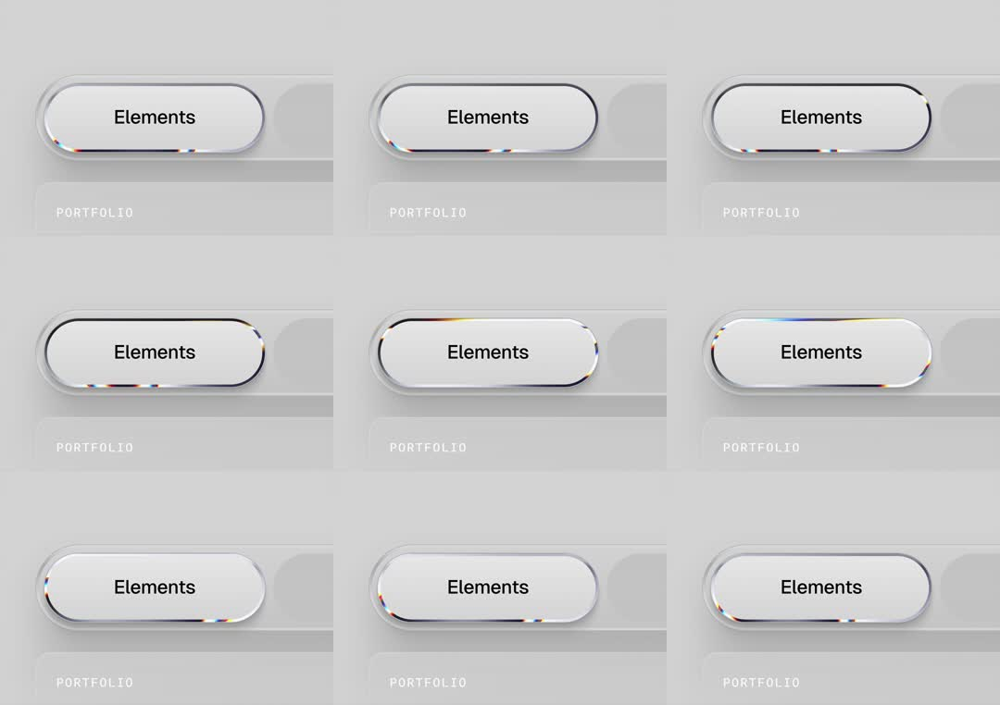

Liquid metal button: a capsule button labeled 'Elements' whose rim is a living chrome edge - a bright specular highlight with rainbow dispersion streaks travels continuously around the pill's border like liquid metal; it sits in a machined grey track with a 'PORTFOLIO' slot below.
Media
Frame-by-frame

0-100%
Light grey scene; pill button with near-white face and 1px chrome rim; across frames the rim's specular highlight + faint RGB fringing travels along the border (bottom edge -> right side -> top), suggesting a rotating light source / flowing metal; subtle inner shadow shifts with it; track and PORTFOLIO label static.
Build prompt
Rebuild this interaction 1:1: a liquid metal button - a capsule labeled "Elements" whose rim is a living chrome edge: a bright specular highlight with rainbow dispersion streaks travels continuously around the pill's border like liquid metal. It sits in a machined grey track with a "PORTFOLIO" slot below.
## Stack
React + TypeScript + Tailwind. Rim as a rotating conic-gradient masked to the border ring (mask: border-only), plus a soft inner shadow layer. Animate transform only for the rotating highlight.
## Scene
Light grey scene: pill button with near-white face and 1px chrome rim, centered in a machined grey track (inset slot styling), small "PORTFOLIO" caption below.
## Motion spec
Pattern: ambient rim circuit.
- The rim's specular highlight (bright core + faint RGB fringing at its edges) travels along the border - bottom edge -> right side -> top - a full circuit every ~4s, strictly linear.
- The button's subtle inner shadow shifts direction with the highlight, as if a light source orbits.
- Face, label, track, caption: perfectly still.
## Calibration
- Circuit ~4s linear: constant speed sells "rotating light"; easing reads as mechanical stutter.
- The RGB dispersion is a faint fringe at the highlight's edges - if the rim reads as a rainbow, dial it back 70%.
- Highlight intensity peaks on edges, dims slightly on corners (corners eat light).
## Reduced motion
Rim renders a static polished chrome gradient.
## Don't miss
- The highlight travels the BORDER only - a conic sweep across the face is a different (wrong) effect.
- Inner shadow direction tracks the highlight; static shadow + moving light breaks the physics.
- The machined track (inset slot, fine edge lines) is half the realism - don't ship the pill alone on flat grey.
Mechanics
trigger
autoplay ambient
elements
capsule button, animated rim (conic gradient), track
properties
rim gradient angle, specular position, chromatic fringe